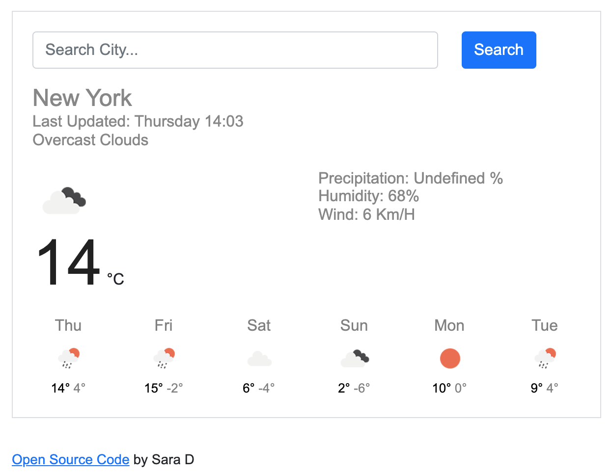

Sara has a passion for health and wellness and comes from a culinary
background. Sara has been working for her family business for many years
at the Vancouver Farmers Markets. With a father born and raised in Paris
who trained as a french culinary professional as well as an Italian
mother, she naturally has a passion for good food and understands the
importance of a good diet. She believes food is our medicine and one of
the most important human needs to live a fulfilling life.
Over the past recent years Sara developed a love for health and fitness
and decided to deepen her knowledge through her Arkaya Yoga Teacher
Training. Sara is a certified Arkaya Yoga instructor with over 300+ hrs
of training. The Arkaya Yoga fundamentals teach one how to enrich their
quality of life by integrating classical Indian yoga techniques into
day-to-day activities. From physical activity to a balanced diet and
over-all well rounded healthy lifestyle, Arkaya Yoga focuses on clearing
and releasing physical, emotional and mental blockages and trauma from
the body to help promote healing. Sara is currently teaching group and
one-on-one sessions in her close community.
Throughout the years Sara has gained experience and knowledge in the
culinary, health and wellness industry understanding the fundamentals to
live a simple yet rich life. In 2020 Sara decided to start her own
journey implementing her knowledge into her own vision. 34degrees is a
superfood chocolate company the focuses on improving ones quality of
life while still enjoying the luxuries life has to offer.
34degrees is dedicated to providing the consumer functional mushrooms,
in new and creative way. 34degrees products have the best ingredients,
from sourcing the highest quality functional mushrooms to Callebaut
chocolate. 34degrees’s platform is committed to educating those who are
health curious, providing a reliable, informative platform that
facilitates exploration and learning with ease and confidence. 34degrees
provides an effortless and new way to consume a daily dose of
superfoods.
Sara is content with the vision and life she has created for herself and
is happy to share her knowledge and health techniques with others. Sara
is currently learning marketing and financing techniques to better
improve her skills and business. Sara is always continuing to grow and
strengthen her skills and knowledge as well as grow her own network and
community with like minded individuals.